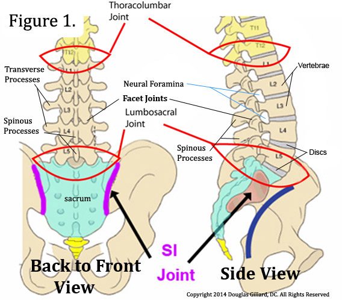

Pain in the lumbar spine (LWS) is one of the most common types of back pain. It may appear suddenly — for example after a wrong movement — or it can become chronic, sometimes radiating into the legs or buttocks.
In Traditional Chinese Medicine, lower back pain often arises from stagnation of Qi and blood along the meridians, or from weakness of Kidney energy.
TCM does not only treat the pain itself — it targets its root cause. With regulating, relaxing, and circulation-enhancing techniques, improvement is often achieved quickly and sustainably.
Although lower back pain is often harmless, there are certain warning signs (“red flags”) that should be medically evaluated.